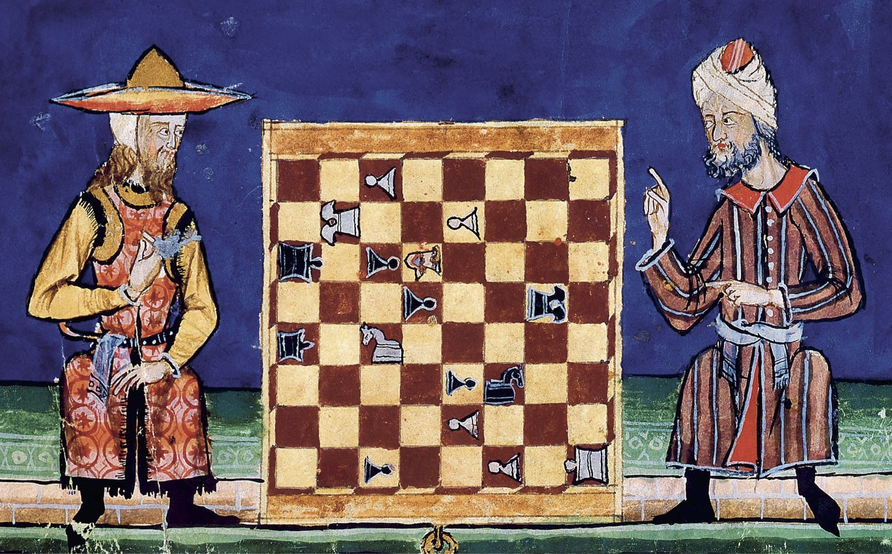

El ajedrez tiene un origen que se remonta a más de 1,500 años. Nació en la India bajo el nombre de Chaturanga, un juego que representaba a los ejércitos de la época: infantería, caballería, elefantes y carros. Desde allí, se extendió a Persia, donde recibió el nombre de Shatranj y comenzó a tomar la forma que conocemos hoy. Al llegar a Europa en la Edad Media, gracias a las rutas comerciales y la influencia de la cultura islámica, el ajedrez experimentó importantes cambios. En el siglo XV, la pieza de la reina (anteriormente conocida como alferza) ganó sus movimientos actuales, lo que hizo el juego más dinámico y popular entre la nobleza del Renacimiento. Con el tiempo, el ajedrez pasó de ser un pasatiempo aristocrático a un fenómeno universal, consolidándose como símbolo de inteligencia y estrategia.

El ajedrez no solo es un juego, sino un reflejo de la cultura y la creatividad humanas. Ha aparecido en obras literarias icónicas, como Alicia a través del espejo de Lewis Carroll, donde el mundo del tablero cobra vida. En el cine, películas como La defensa Luzhin o Gambito de dama muestran su impacto en las vidas de los jugadores. En Rusia, el ajedrez tiene un lugar especial, fomentado desde la niñez como parte de la educación; mientras que en Cuba, José Raúl Capablanca transformó el ajedrez en un orgullo nacional. En otros contextos, el ajedrez es un medio para unir comunidades, desarrollar habilidades mentales y servir como metáfora de la vida misma: cada movimiento cuenta y cada decisión tiene consecuencias.
El ajedrez clásico ha inspirado muchas variantes que desafían las convenciones y ofrecen nuevas formas de jugar: